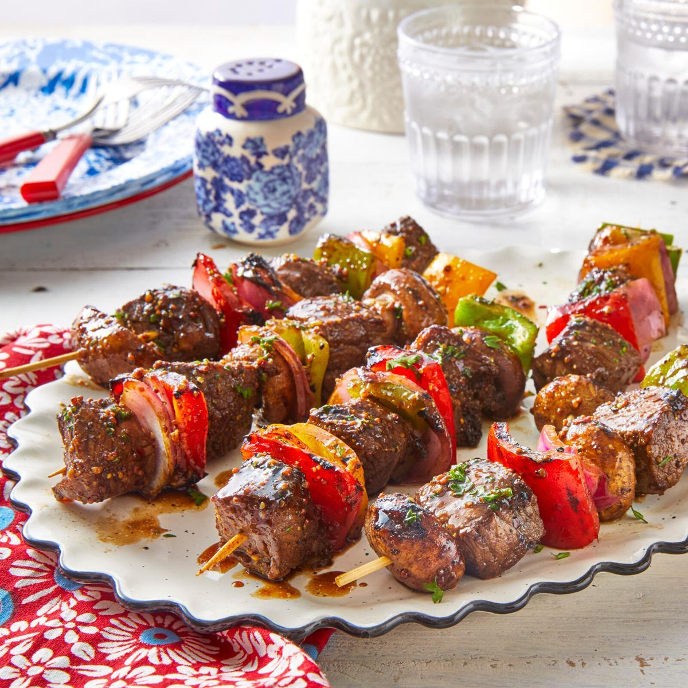

Kebab Recipe

Description
Ingredients:
- 1 cup plain whole milk Greek yogurt
- 2 tablespoons extra-virgin olive oil
- 2 teaspoons paprika
- 1 teaspoon crushed red pepper flakes (reduce to ½ teaspoon for less heat)
- 2 tablespoons freshly squeezed lemon juice, from one lemo
- Vegetable oil, for greasing the grill
Steps:
- In a medium bowl, combine the yogurt, olive oil, paprika, cumin, cinnamon, red pepper flakes, lemon zest, lemon juice, salt, pepper and garlic.
- Line a baking sheet with aluminum foil for easy clean up. Thread the chicken onto metal skewers, folding if the pieces are long and thin, alternating with the red onions. Be sure not to cram the skewers. (Note: You'll need between 6-8 skewers.) Place the kabobs on the prepared baking sheet. Brush the marinade all over the meat, coating well. Cover and refrigerate at least eight hours or overnight.
- Preheat the grill to medium-high heat. To grease the grill, lightly dip a wad of paper towels in vegetable oil and, using tongs, carefully rub over the grates several times until glossy and coated. Grill the chicken kabobs until golden brown and cooked through, turning the skewers occasionally, 13 to 15 minutes. (The yogurt marinade makes these kabobs prone to sticking to the grill grates; if necessary, use a metal BBQ spatula to scrape underneath the kabobs and release them.) Transfer the kabobs to a platter and serve.
Note: I've specified boneless skinless chicken thighs for this recipe; they're juicier and more flavorful than chicken breasts, and they work better in this type of yogurt and lemon-based marinade. They're also much easier to cook without drying out.